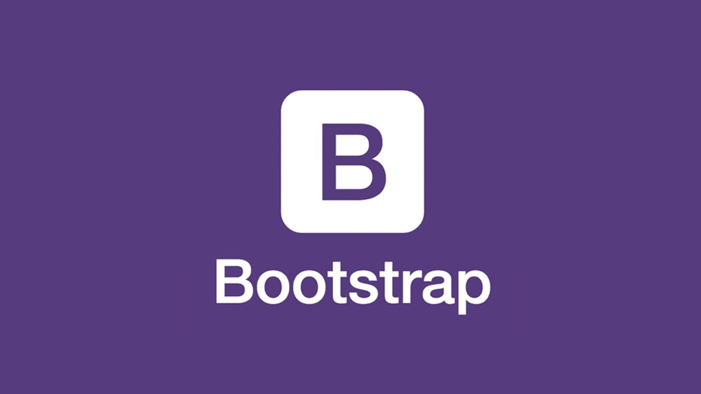
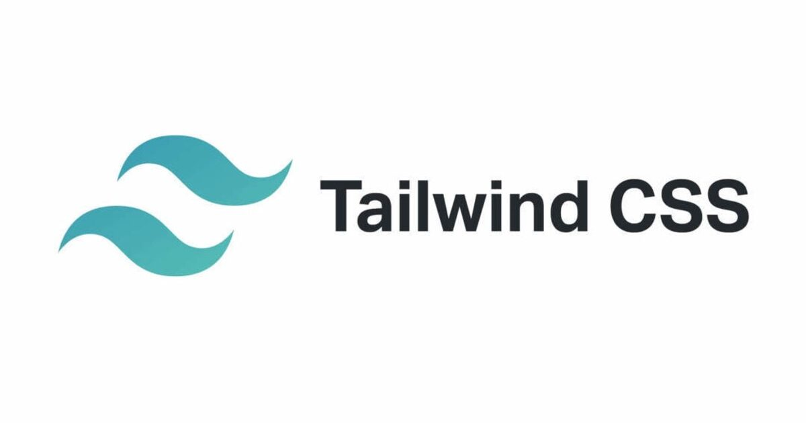
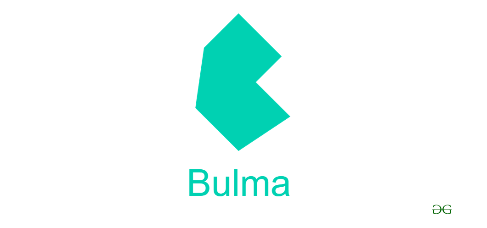

CSS фреймворки обычно предоставляют возможности для пользовательских настроек и расширений, которые позволяют удовлетворить уникальные потребности проекта. Вот несколько способов, как это можно сделать:
1. Bootstrap:
- Создание адаптивного сайта: Использование сетки Bootstrap для создания адаптивного дизайна, который хорошо выглядит как на компьютере, так и на мобильных устройствах.
- Навигационное меню: Использование стилей Bootstrap для создания навигационного меню с выпадающими пунктами меню и адаптивной навигацией для мобильных устройств.
- Формы и кнопки: Использование стилей Bootstrap для создания красивых форм, кнопок и других элементов интерфейса.
2. Foundation:
- Создание карусели: Использование компонентов Foundation для создания карусели изображений или контента на главной странице сайта.
- Использование сетки: Использование сетки Foundation для создания макета страницы с несколькими колонками и адаптивным поведением.
- Всплывающие окна: Использование всплывающих окон Foundation для отображения модальных окон, уведомлений или другого контента.
3. Tailwind CSS:
- Создание пользовательских компонентов: Использование классов Tailwind CSS для создания пользовательских компонентов, таких как карточки, блоки контента и другие элементы интерфейса.
- Настройка цветовой схемы: Использование переменных Tailwind CSS для настройки цветовой схемы сайта без необходимости написания дополнительного CSS.
- Анимации и переходы: Использование встроенных классов Tailwind CSS для добавления анимаций и переходов к элементам интерфейса.4. Bulma:
- Создание макета страницы: Использование компонентов Bulma для быстрого создания макета страницы с заголовком, боковой панелью и основным контентом.
- Таблицы и списки: Использование стилей Bulma для создания красиво оформленных таблиц, списков и других элементов данных.
- Уведомления и сообщения: Использование компонентов Bulma для отображения уведомлений, сообщений об ошибках или успешных действиях.
Это лишь несколько примеров того, как можно использовать различные CSS фреймворки для создания веб-сайтов. Каждый фреймворк имеет свои уникальные возможности и компоненты, которые могут быть использованы для различных целей.